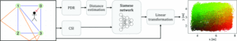
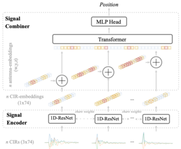
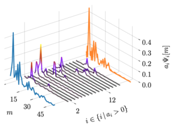
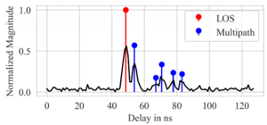
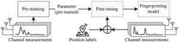
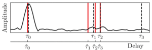

Jonathan Ott is a PhD candidate whose research focuses on unsupervised representation learning for wireless signals and model-aided deep learning methods. He has been a research associate at the Fraunhofer Institute for Integrated Circuits since 2023. His work has, among other things, been recognized with the Best Paper Award at the International Conference on Indoor Positioning and Indoor Navigation. In 2022, he completed a double master’s degree from the University of Applied Sciences Augsburg and Ulster University in Northern Ireland.
Publications


Passive Channel Charting: Locating Passive Targets using a UWB Mesh
Fingerprint-based passive localization enables high localization accuracy using low-cost UWB IoT radio sensors. However, fingerprinting demands extensive effort for data acquisition. The concept of channel charting reduces this effort by modeling and projecting the manifold of channel state information (CSI) onto a 2D coordinate space. So far, researchers have only applied this concept to active radio localization, where a mobile device intentionally and actively emits a specific signal.In this paper, we apply channel charting to passive localization. We use a pedestrian dead reckoning (PDR) system to estimate a target's velocity and derive a distance matrix from it. We then use this matrix to learn a distance-preserving embedding in 2D space, which serves as a fingerprinting model. In our experiments, we deploy six nodes in a fully connected ultra-wideband (UWB) mesh network to show that our method achieves high localization accuracy, with an average error of just 0.24 m, even when we train and test on different targets.

Resilient Channel Charting Under Varying Radio Link Availability
We show a channel charting architecture that can natively handle variable numbers of CSI measurements and arbitrary antenna subsets. Across two public real-world SISO and MIMO datasets, AdaPos maintains state-of-the-art localization accuracy under missing-antenna conditions, replaces roughly 57 configuration-specific models with a single unified model, and provides resilience to both individual antenna failures and full-array outages.

Simplicity is Key: An Unsupervised Pretraining Approach for Sparse Radio Channels
We introduce Sparse pretrained Radio Transformer (SpaRTran), a hybrid method based on the concept of compressed sensing for wireless channels. SpaRTran builds around a wireless channel model that constrains the optimization procedure to physically meaningful solutions and induces a strong inductive bias, cutting positioning error by up to 28% and increasing top-1 codebook selection accuracy for beamforming by 26 percentage points.


Estimating Multipath Component Delays with Transformer Models
We implicitly estimate the number of MPCs and achieve subsample accuracy without using computationally intensive super-resolution techniques. Our approach outperforms known methods in detection performance and accuracy at different bandwidths. Our ablation study shows exceptional results on simulated and real datasets and generalizes to unknown radio environments.

Radio Foundation Models: Pre-training Transformers for 5G-based Indoor Localization
We propose a self-supervised learning framework that pre-trains a general transformer (TF) neural network on 5G channel measurements that we collect on-the-fly without expensive equipment. Our novel pretext task randomly masks and drops input information to learn to reconstruct it. So, it implicitly learns the spatiotemporal patterns and information of the propagation environment that enable FP-based localization. Most interestingly, when we optimize this pre-trained model for localization in a given environment, it achieves the accuracy of state-of-the-art methods but requires ten times less reference data and significantly reduces the time from training to operation.

Multipath delay estimation in complex environments using transformer
We propose an MPC delay estimation pipeline based on a Transformer (TF) neural network, which implicitly estimates the number and delays of the MPCs. We achieve subsample accuracy without using computational expensive super-resolution techniques. Our approach outperforms state-of-the art on detection and delay estimation of MPCs on different bandwidths. We also show that our approach can easily be fine-tuned on real world data with very few labeled data samples, making it a well-suited candidate for real world deployments.